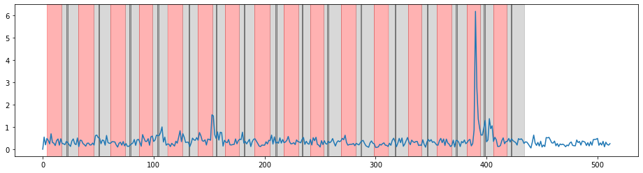

Create Regressors
Contents
import pandas as pd
import numpy as np
import glob
from os.path import basename
from pathlib import Path
import matplotlib.pyplot as plt
import seaborn as sns
import re
import math
Create Regressors¶
class data_loader:
def __init__(self, subj, **kwargs):
self.subj = int(subj)
self.files = sorted(glob.glob('/home/songtao/ABA/bswift/dataset/behavioral/QSQ_{subj}/SUBJ{subj}_RUN*'.format(subj = self.subj)))
self.runs = sorted(list(set([basename(i).split('_')[1] for i in self.files])))
self.useRuns = [i for i in self.runs if i in ["RUN{0}".format(i) for i in range(1, 9)]]
## Speical case for ABA600
if self.subj == 600:
self.useRuns = [i for i in self.useRuns if i != 'RUN5']
## Remove excluded runs if applied
if kwargs != {}:
self.useRuns = [i[1] for i in [(idx+1, run) for idx, run in enumerate(self.useRuns)]
if i[0] not in kwargs['excludeRuns']]
def run_info(self, run, long=False):
event = pd.read_csv([i for i in self.files if "event" in i if run in i][0])
# Extract trials condition info for the run
Rename = {'Shocked':'Rec', 'Touch':'Rec', 'Escaped':'NotRec',
'Rewarded 100':'Rec', 'Rewarded 10':'Rec', 'Missed':'NotRec'}
condInfo = event[event['kind'].isin(['Shocked', 'Touch', 'Escaped', 'Rewarded 100',
'Rewarded 10', 'Missed'])].replace(Rename)
condInfo['Cond'] = condInfo['kind'] + '_' + condInfo['level'].replace({1:'high', 0:'low'}) + \
condInfo['encounter_type'].replace({1:'T', 0:'R'})
condInfo = condInfo[['encounter', 'Cond']].reset_index(drop=True)
## Combine trials condition info with event df
event = event.merge(condInfo, how='left', on='encounter')
eventCols = ['play_start', 'play_end', 'isi_start', 'isi_end',
'feedback_start', 'feedback_end', 'iti_start', 'iti_end']
event = event[event['kind'].isin(eventCols)]
# Combine ongoing time with event df, Long form
ongoing = pd.read_csv([i for i in self.files if "ongoing" in i if run in i][0])
ongoing['time'] -= ongoing['time'].values[0]
df = event.merge(ongoing.drop(['kind'], axis=1), how='left', on=['frame', 'encounter'])
df['Subj'] = self.subj
df['Run'] = run
df['Trial'] = df['encounter']
df = df[['Subj', 'Run', 'Trial', 'time', 'kind', 'Cond']]
## Remove incomplete trials
### Check completion of trials
complete = [(i, df[df['Trial'] == i].shape[0]) for i in df['Trial'].unique()]
### Remove incompleted trials
for tri in complete:
if (tri[1] < 8):
df = df.drop(df[df['Trial'] == tri[0]].index)
print("For ABA{0}, {1}: Last tiral is removed due to incompletion".format(self.subj, run))
else:
continue
## Turn df into short form
if long:
return df
else:
short = pd.concat([df[['Subj', 'Run', 'Trial', 'Cond']].drop_duplicates().reset_index(drop=True),
df.pivot(columns='kind', values='time').apply(lambda x: x.dropna().to_numpy()).reset_index(drop=True)[eventCols]],
axis=1)
return short
def concatRun_info(self, skip=True):
if skip:
runs = self.useRuns
else:
runs = self.runs
out = []
for run in runs:
out.append(self.run_info(run))
out = pd.concat(out).reset_index(drop=True)
return out
def write_regressor(self, path, phase, condList, align='end', duration=False, df=None):
if df is None:
df = self.concatRun_info()
col = ["{0}_start".format(phase), "{0}_end".format(phase)]
out = {}
condBool = True if len(condList) == 8 else False
for cond in condList:
if condBool:
tmp = df[df['Cond'] == cond][['Run'] + col]
else:
tmp = df[df['Cond'].str.contains(cond)][['Run'] + col]
res = []
for run in self.useRuns:
tmpSub = tmp[tmp['Run'] == run]
item = "{0}_{1}".format(phase, align)
time = tmpSub[item].tolist()
if duration:
dur = (tmpSub[col[1]] - tmpSub[col[0]]).tolist()
res.append(["{0:.3f}:{1:.3f}".format(i, j) for i, j in zip(time, dur)])
else:
res.append(["{0:.3f}".format(i) for i in time])
if res[-1] == []:
res[-1] = ['*']
out[cond] = res
outPath = "/home/songtao/ABA/zoopsy/stimtimes/{0}/ABA{1}/regs/".format(path, self.subj)
Path(outPath).mkdir(parents=True, exist_ok=True)
for cond, values in out.items():
filename = "ABA{subj}_{phase}_{cond}.txt".format(subj=self.subj, phase=phase, cond=cond)
with open(outPath + filename, 'w') as f:
for i in values[:-1]:
f.write("{0}\n".format("\t".join(i)))
f.write("{0}".format("\t".join(values[-1])))
def write_rest(self, path, df=None):
if df is None:
df = self.concatRun_info()
rest_start = df.groupby(['Run'])['iti_end'].max().reset_index()
rest_start = (rest_start['iti_end'] + 0.017).to_numpy()
if self.subj == 600:
volumns = 257
elif self.subj == 601:
volumns = 333
else:
volumns = 410
rest_dur = volumns*1.25 - rest_start
outPath = "/home/songtao/ABA/zoopsy/stimtimes/{0}/ABA{1}/regs/".format(path, self.subj)
Path(outPath).mkdir(parents=True, exist_ok=True)
filename = "ABA{subj}_rest.txt".format(subj=self.subj)
with open(outPath + filename, 'w') as f:
for i, j in zip(rest_start, rest_dur):
if j >= 0:
f.write("{0:.3f}:{1:.3f}\n".format(i, j))
else:
f.write("*\n")
print("Caution: behavioral log is longer than scan for ABA{subj}: {run}".format(subj=self.subj, run=np.where(rest_dur==j)[0][0] + 1))
cond4List = ['highT', 'lowT', 'highR', 'lowR']
cond8List = ["{0}_{1}".format(j, i) for i in cond4List for j in ['Rec', 'NotRec']]
subjList = sorted(glob.glob("/home/songtao/ABA/bswift/dataset/behavioral/QSQ_6??"))
subjList = [basename(i).split('_')[1] for i in subjList]
raw = []
for subj in subjList:
tmp = data_loader(subj)
if len(tmp.useRuns) > 0:
raw.append(tmp.concatRun_info())
raw = pd.concat(raw).reset_index(drop=True)
For ABA600, RUN1: Last tiral is removed due to incompletion
For ABA600, RUN2: Last tiral is removed due to incompletion
For ABA600, RUN3: Last tiral is removed due to incompletion
For ABA600, RUN6: Last tiral is removed due to incompletion
For ABA600, RUN7: Last tiral is removed due to incompletion
For ABA600, RUN8: Last tiral is removed due to incompletion
For ABA601, RUN3: Last tiral is removed due to incompletion
For ABA601, RUN4: Last tiral is removed due to incompletion
For ABA601, RUN7: Last tiral is removed due to incompletion
For ABA601, RUN8: Last tiral is removed due to incompletion
For ABA628, RUN6: Last tiral is removed due to incompletion
data_loader(628).useRuns
['RUN1', 'RUN2', 'RUN3', 'RUN4', 'RUN5', 'RUN6', 'RUN7', 'RUN8']
Remove motion excluded runs¶
exclude = pd.read_csv("~/ABA/bswift/scripts/first_level/runs_to_exclude.txt", header = 0, sep ='\t')
exclude = exclude[exclude['Reason'] == 'motion']
df = []
for subj in subjList:
if subj not in ['605', '629', '678', '694']:
if 'ABA{0}'.format(subj) in exclude['Subject'].unique():
excludeRuns = exclude[exclude['Subject'] == 'ABA'+subj]['Run'].tolist()
tmp = data_loader(subj, excludeRuns=excludeRuns)
else:
tmp = data_loader(subj)
if len(tmp.useRuns) > 0:
tmp_df = tmp.concatRun_info()
tmp.write_regressor('stimtimes_4_conds_Realigned_end_reducedRuns', 'feedback',
cond8List, align='start', df=tmp_df)
tmp.write_regressor('stimtimes_4_conds_Realigned_end_reducedRuns', 'play',
cond4List, align='end', df=tmp_df)
tmp.write_rest('stimtimes_4_conds_Realigned_end_reducedRuns', df=tmp_df)
df.append(tmp_df)
else:
continue
df = pd.concat(df).reset_index(drop=True)
For ABA600, RUN1: Last tiral is removed due to incompletion
For ABA600, RUN2: Last tiral is removed due to incompletion
For ABA600, RUN3: Last tiral is removed due to incompletion
For ABA600, RUN6: Last tiral is removed due to incompletion
For ABA600, RUN7: Last tiral is removed due to incompletion
For ABA600, RUN8: Last tiral is removed due to incompletion
For ABA601, RUN3: Last tiral is removed due to incompletion
For ABA601, RUN4: Last tiral is removed due to incompletion
For ABA601, RUN7: Last tiral is removed due to incompletion
For ABA601, RUN8: Last tiral is removed due to incompletion
Caution: behavioral log is longer than scan for ABA601: 1
Caution: behavioral log is longer than scan for ABA601: 5
For ABA628, RUN6: Last tiral is removed due to incompletion
x = data_loader(605).run_info('RUN1')
fig, ax = plt.subplots(figsize=(16, 4))
ax.plot(xx, yy)
for tri in x['Trial'].unique():
tmp = x[x['Trial'] == tri]
ax.axvspan(tmp['play_start'].values[0], tmp['play_end'].values[0], alpha=0.3, color='red')
ax.axvspan(tmp['isi_start'].values[0], tmp['isi_end'].values[0], alpha=0.3, color='grey')
ax.axvspan(tmp['iti_start'].values[0], tmp['iti_end'].values[0], alpha=0.3, color='grey')
ax.axvspan(tmp['feedback_start'].values[0], tmp['feedback_end'].values[0], alpha=0.3, color='black')
x = data_loader(677).run_info('RUN3')
yy = [np.float64(i) for i in re.split(r"\s|\[|\]|\n", y[y['Subject'] == 'ABA677']['FD'].tolist()[0]) if i != '']
xx = np.arange(0, len(yy))*1.25
fig, ax = plt.subplots(figsize=(16, 4))
ax.plot(xx, yy)
for tri in x['Trial'].unique():
tmp = x[x['Trial'] == tri]
ax.axvspan(tmp['play_start'].values[0], tmp['play_end'].values[0], alpha=0.3, color='red')
ax.axvspan(tmp['isi_start'].values[0], tmp['isi_end'].values[0], alpha=0.3, color='grey')
ax.axvspan(tmp['iti_start'].values[0], tmp['iti_end'].values[0], alpha=0.3, color='grey')
ax.axvspan(tmp['feedback_start'].values[0], tmp['feedback_end'].values[0], alpha=0.3, color='black')
